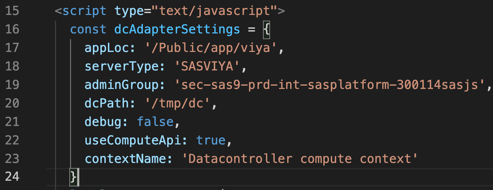
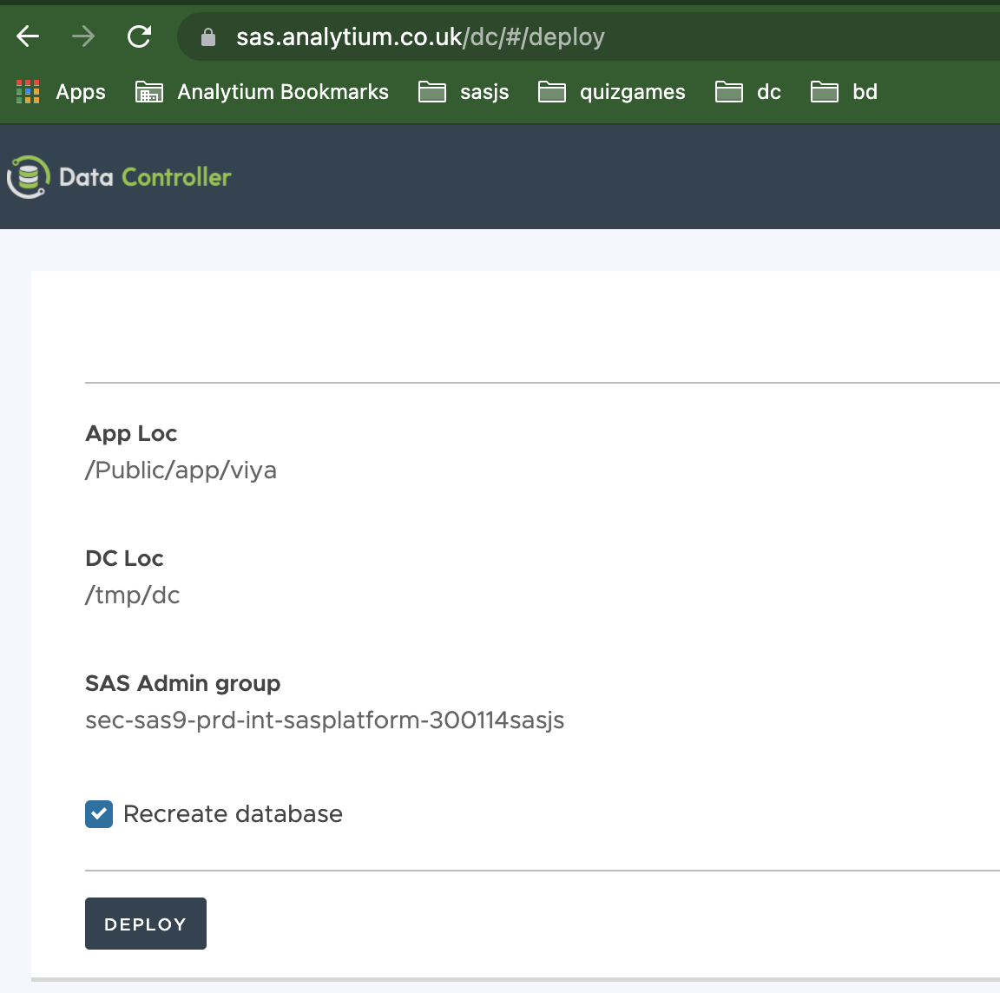

SAS Viya Deployment¶
Overview¶
Data Controller for SAS Viya consists of a frontend, a set of Job Execution Services, a staging area, a Compute Context, and a database library. The library can be a SAS Base engine if desired, however this can cause contention (eg table locks) if end users are able to connect to the datasets directly, eg via Enterprise Guide or Base SAS. A database that supports concurrent access is highly recommended.
Prerequisites¶
System Account¶
Data Controller makes use of a system account for performing backend data updates and writing to the staging area. This needs to be provisioned in advance using the Viya admin-cli. The process is well described here: https://communities.sas.com/t5/SAS-Communities-Library/SAS-Viya-3-5-Compute-Server-Service-Accounts/ta-p/620992
Database¶
Whilst we do recommend that Data Controller configuration tables are stored in a database for concurrency reasons, it is also possible to use a BASE engine library, which is adequate if you only have a few users.
To migrate the control library to a database, first perform a regular deployment, and afterwards you can generate the DDL and update the settings file..
Make sure the system account (see above) has full read / write access.
Note
"Modify schema" privileges are not required.
Staging Directory¶
All deployments of Data Controller make use of a physical staging directory. This is used to store logs, as well as CSV and Excel files uploaded by end users. This directory should NOT be accessible by end users - only the SAS system account requires access to this directory. A typical small deployment will grow by a 5-10 mb each month. A very large enterprise customer, with 100 or more editors, might generate up to 0.5 GB or so per month, depending on the size and frequency of the Excel EUCs and CSVs being uploaded. Web modifications are restricted only to modified rows, so are typically just a few kb in size.
Deployment Diagram¶
The below areas of the SAS Viya platform are modified when deploying Data Controller:

Deployment¶
Data Controller deployment is split between 3 deployment types:
- Demo version
- Full Version (manual deploy)
- Full Version (automated deploy)
There are several parts to this proces:
- Create the Compute Context
- Deploy Frontend
- Prepare the database and update settings (optional)
- Update the Compute Context autoexec
Create Compute Context¶
The Viya Compute context is used to spawn the Job Execution Services - such that those services may run under the specified system account, with a particular autoexec.
We strongly recommend a dedicated compute context for running Data Controller. The setup requires an Administrator account.
- Log onto SASEnvironment Manager, select Contexts, View Compute Contexts, and click the Create icon.
- In the New Compute Context dialog, enter the following attributes:
- Context Name
- Launcher Context
- Attribute pairs:
- reuseServerProcesses: true
- runServerAs: {{the account set up earlier}}
- Save and exit
Note
XCMD is NOT required to use Data Controller.
Deploy frontend¶
Unzip the frontend into your chosen directory (eg /var/www/html/DataController) on the SAS Web Server. Open index.html and update the following inside dcAdapterSettings:
appLoc- this should point to the root folder on SAS Drive where you would like the Job Execution services to be created. This folder should initially, NOT exist (if it is found, the backend will not be deployed)contextName- here you should put the name of the compute context you created in the previous step.dcPath- the physical location on the filesystem to be used for staged data. This is only used at deployment time, it can be configured later in$(appLoc)/services/settings.sasor in the autoexec if used.adminGroup- the name of an existing group, which should have unrestricted access to Data Controller. This is only used at deployment time, it can be configured later in$(appLoc)/services/settings.sasor in the autoexec if used.servertype- should be SASVIYAdebug- can stay asfalsefor performance, but could be switched totruefor debugging startup issuesuseComputeApi- usetruefor best performance.

Now, open https://YOURSERVER/DataController (using whichever subfolder you deployed to above) using an account that has the SAS privileges to write to the appLoc location.
You will be presented with a deployment screen like the one below. Be sure to check the "Recreate Database" option and then click the "Deploy" button.

Your services are deployed! And the app is operational, albeit still a little sluggish, as every single request is using the APIs to fetch the content of the $(appLoc)/services/settings.sas file.
To improve responsiveness by another 700ms we recommend you follow the steps in Update Compute Context Autoexec below.
Deploy Database¶
If you have a lot of users, such that concurrency (locked datasets) becomes an issue, you might consider migrating the control library to a database.
The first part to this is generating the DDL (and inserts). For this, use the DDL exporter as described here. If you need a flavour of DDL that is not yet supported, contact us.
Step 2 is simply to run this DDL in your preferred database.
Step 3 is to update the library definition in the $(appLoc)/services/settings.sas file using SAS Studio.
Update Compute Context Autoexec¶
First, open the $(appLoc)/services/settings.sas file in SAS Studio, and copy the code.
Then, open SASEnvironment Manager, select Contexts, View Compute Contexts, and open the context we created earlier.
Switch to the Advanced tab and paste in the SAS code copied from SAS Studio above.
It will look similar to:
%let DC_LIBREF=DCDBVIYA;
%let DC_ADMIN_GROUP={{YOUR DC ADMIN GROUP}};
%let DC_STAGING_AREA={{YOUR DEDICATED FILE SYSTEM DRIVE}};
libname &dc_libref {{YOUR DC DATABASE}};
To explain each of these lines:
DC_LIBREFcan be any valid 8 character libref.DC_ADMIN_GROUPis the name of the group which will have unrestricted access to Data ControllerDC_STAGING_AREAshould point to the location on the filesystem where the staging files and logs are be stored- The final libname statement can also be configured to point at a database instead of a BASE engine directory (contact us for DDL)
If you have additional libraries that you would like to use in Data Controller, they should also be defined here.